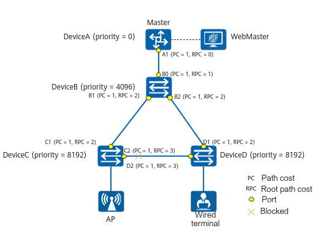

Accurate Loop Topology Blocking
Definition
Most campus networks use the tree topology, and the Spanning Tree Protocol (STP) is enabled by default to prevent loops. After a loop occurs on the network, the location of the blocked port is determined based on the STP calculation rules. However, this location is not fixed in the topology. The UAL protocol provides the accurate loop topology blocking function to orchestrate the STP priority and port cost of each NE in instance 0. This ensures that the blocked port calculated by STP is always on the east-west line instead of the north-south line, thus prompting the user if the current connection is correct.
Calculation Method for Accurate Loop Topology Blocking
Accurate loop topology blocking is implemented based on bridge protocol data units (BPDUs) between devices. BPDUs carry information required for calculating the spanning tree topology. The Root Identifier, Root Path Cost, Bridge Identifier, and Port Identifier fields in a BPDU form the BPDU priority vector {root BID, root path cost, sender BID, port ID}. The location of the blocked port is determined by exchanging BPDUs and comparing the values of the fields in the BPDU priority vector. For details about the STP configuration and topology calculation method, see Configuration > CLI Configuration Guide > Ethernet Switching Configuration > STP/RSTP/MSTP Configuration.
The calculation method for accurate loop topology blocking involves the following two rules:
- Device priority orchestration rule
After the STP configuration is delivered on WebMaster, the management gateway functions as the root bridge, and the bridge priority is 0. The bridge priority is incremented by 4096 layer by layer. In the UAL tree topology, NEs at the same layer have the same priority and root path cost. According to the STP calculation principle, when the root bridge IDs and root path costs are the same, a larger BID value (consisting of the bridge priority and bridge MAC address) indicates a lower NE priority. The blocked port is typically selected from the NE with a lower priority.
- Port priority orchestration rule
Port priority orchestration is to calculate the root path cost (RPC) to determine the blocked port. A larger root path cost indicates a lower port priority and a higher probability that the port is selected as the blocked port. The RPC is the accumulated path cost from a port to the root bridge. In the UAL network topology, the path cost is fixed at 1. The root path cost of an east-west port is greater than that of a north-south port. Therefore, an east-west port is selected as the blocked port.
After NE discovery and topology collection, the tree topology of the entire network is established. The following uses an example to describe the calculation method for accurate loop topology blocking.

- Final priority vector of devices, as shown in Table 1
Table 1 Final priority vector of devices Device
Port
Configuration BPDU
{root ID, root path cost, sender BID, sender PID}
DeviceA
Port A1
{0, 0, 0, Port A1}
DeviceB
Port B0
Port B1
Port B2
{0, 1, 4096, Port B0}
{0, 2, 4096, Port B1}
{0, 2, 4096, Port B2}
DeviceC
Port C1
Port C2
{0, 2, 8392, Port C1}
{0, 3, 8392, Port C2}
The BID of DeviceC is 8392, which is the sum of the bridge priority (8192) and the bridge MAC address (200).
DeviceD
Port D1
Port D2
{0, 2, 8292, Port D1}
{0, 3, 8292, Port D2}
The BID of DeviceD is 8292, which is the sum of the bridge priority (8192) and the bridge MAC address (100).

Only physical main interfaces and Eth-Trunk main interfaces support this orchestration function.
- Orchestration process of NEs in the network topology
Table 2 NE topology orchestration process Device
Comparison
DeviceA
The device is configured as the root bridge with the optimal configuration BPDU.
DeviceB
The root path cost of ports B1 and B2 on DeviceB is 1, smaller than the root path cost 2 of port C1 on DeviceC and port D1 on DeviceD (root path cost 1 in the received BPDU plus the link path cost 1). As such, DeviceB is not selected as the blocked device.
DeviceC
The root path cost of port C1 is 2 (root path cost 1 in the received configuration BPDU plus the link path cost 1), and the root path cost of port C2 is 3 (root path cost 1 in the received configuration BPDU plus the link path cost 2). DeviceC finds that port C1 has a smaller root path cost and therefore considers the configuration of port C1 superior to that of port C2. DeviceC then selects port C1 as the root port. DeviceC calculates the configuration BPDU {0, 3, 8392, Port C2} for the designated port and compares the calculated configuration BPDU with the configuration BPDU {0, 3, 8292, Port D2} of port C2. The calculated configuration BPDU is inferior to the configuration BPDU of port C2, so DeviceD selects port C2 as the designated port.
DeviceD
The root path cost of port D1 is 2 (root path cost 1 in the received configuration BPDU plus the link path cost 1), and the root path cost of port D2 is 3 (root path cost 1 in the received configuration BPDU plus the link path cost 2). DeviceD finds that port D1 has a smaller root path cost, and therefore considers the configuration of port D1 superior to that of port D2. DeviceD selects port D1 as the root port. DeviceD calculates the configuration BPDU {0, 3, 8292, Port D2} for the designated port and compares the calculated configuration BPDU with the configuration BPDU {0, 3, 8392, Port C2} of port D2. The calculated configuration BPDU is superior to the configuration BPDU of port D2, so DeviceD selects port D2 as the designated port.
According to Table 2, DeviceC has the lowest priority and C2 is selected as the blocked port. Port C2 is located on the east-west line of the tree topology. The calculation for accurate loop topology blocking is complete.